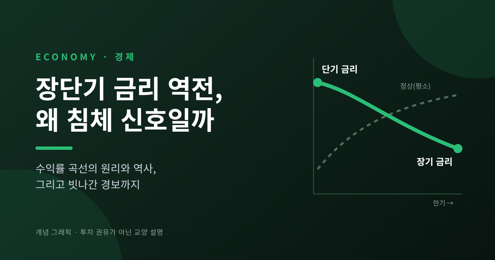
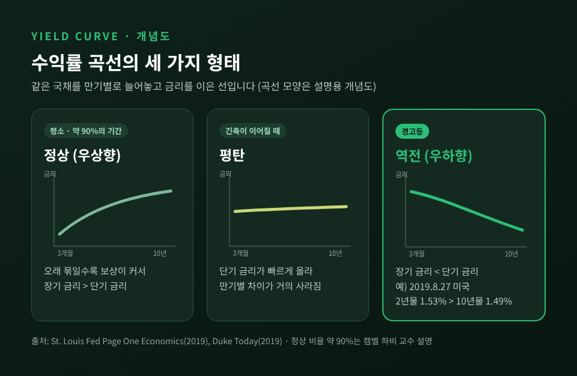
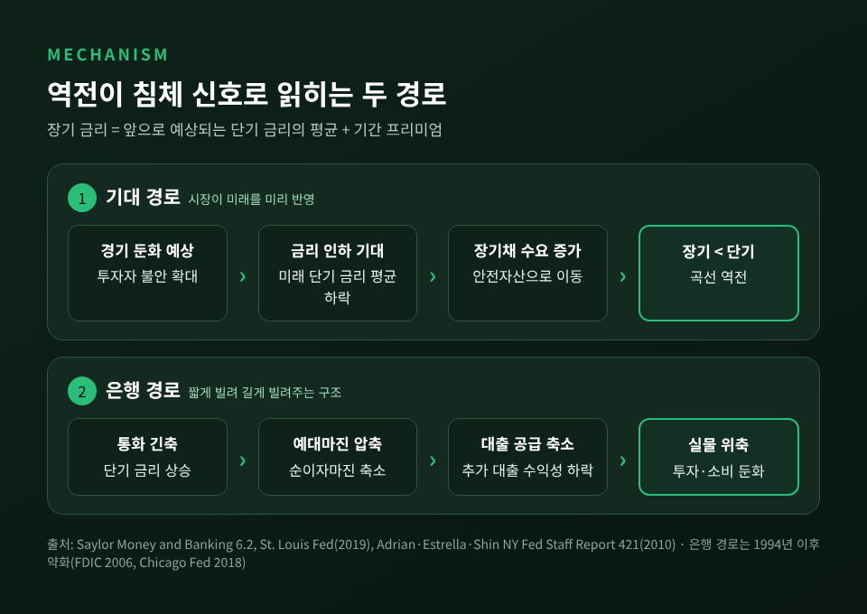
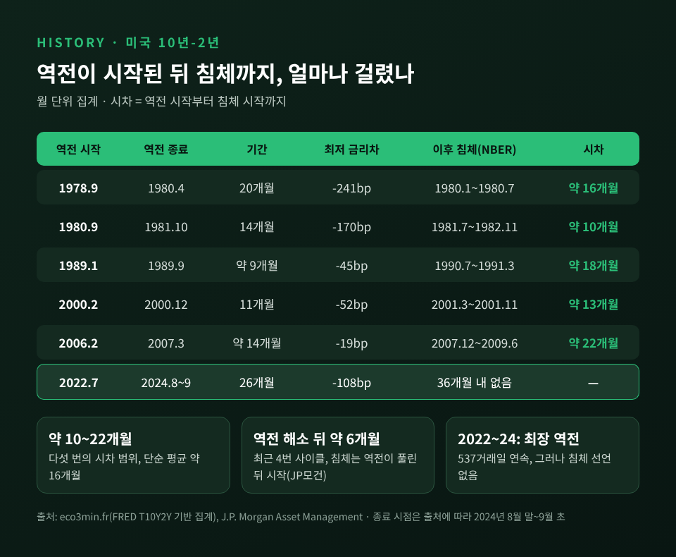
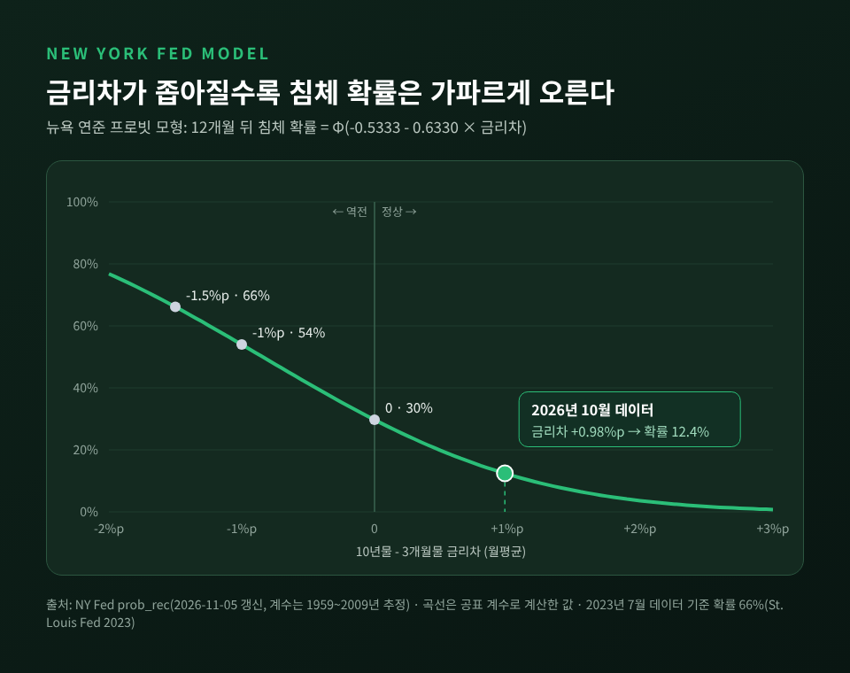
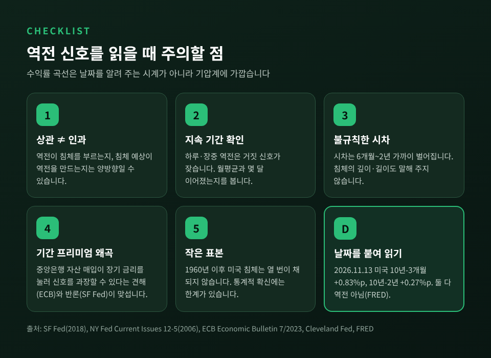

장단기 금리 역전은 왜 경기침체 신호일까 — 수익률 곡선의 원리와 한계

이번 글에서는 장단기 금리 역전이 무엇이고, 왜 수십 년 동안 경기침체의 예고편처럼 읽혀 왔는지 정리해 보겠습니다. 원리와 역사, 그리고 2022~2024년의 '빗나간 경보'까지 함께 살펴봅니다. 투자 권유가 아니라 경제 지표를 읽는 눈을 기르기 위한 교양 설명입니다.
세 줄 요약 - 장기 금리가 단기 금리보다 낮아지는 '역전'은 시장이 앞으로 금리 인하, 곧 경기 둔화를 예상한다는 뜻으로 읽힙니다. - 미국에서는 1960년 이후 침체마다 10년-3개월 금리차가 먼저 역전됐고, 시차는 대체로 1~2년이었습니다. - 다만 2022~2024년 역사상 가장 긴 역전 뒤에도 침체는 오지 않았습니다. 이 지표는 시계가 아니라 기압계에 가깝습니다.
■ 수익률 곡선, 세 가지 얼굴
수익률 곡선은 같은 국채를 만기별로 늘어놓고 금리를 이은 선입니다. 가로축은 만기, 세로축은 금리입니다.
평소에는 오른쪽 위로 올라갑니다. 돈을 오래 묶어 둘수록 더 많은 보상을 요구하기 때문입니다. 캠벨 하비 듀크대 교수에 따르면 미국 곡선은 전체 기간의 약 90%를 이 '정상' 모양으로 지냅니다.
긴축이 이어지면 단기 금리가 빠르게 오르면서 곡선이 눕습니다. 이것이 '평탄'입니다. 더 나아가 장기 금리가 단기 금리 아래로 내려가면 '역전'입니다. 2019년 8월 27일 미국 2년물 금리는 1.53%, 10년물은 1.49%였습니다.

■ 원리 ① 장기 금리 안에는 '미래 금리의 평균'이 들어 있다
교과서는 장기 금리를 이렇게 나눕니다.
장기 금리 = 앞으로 예상되는 단기 금리의 평균 + 기간 프리미엄
앞부분이 기대가설, 뒷부분이 오래 묶이는 위험에 대한 덤입니다. 매년 단기 금리가 4%로 예상되고 프리미엄이 0.5%라면 5년물은 4.5%가 됩니다. 곡선은 우상향입니다.
이번에는 단기 금리가 지금 12%인데 앞으로 10, 8, 5, 5%로 내려갈 것으로 예상된다고 해 봅니다. 평균 8%에 프리미엄 0.5%를 더하면 5년물은 8.5%입니다. 지금의 단기 금리 12%보다 낮으니 곡선이 뒤집힙니다.
프리미엄은 늘 양(+)입니다. 그래서 역전이 일어났다는 건, 금리 하락 기대가 프리미엄을 누를 만큼 강하다는 뜻이 됩니다. 그리고 중앙은행이 금리를 크게 내리는 때는 대개 경기가 식을 때입니다.
여기에 안전자산 수요가 겹칩니다. 불안해진 투자자가 10년물로 몰리면 장기 금리는 더 내려갑니다. 하비 교수는 수익률 곡선을 "경제 심리를 우아하게 요약한 것"이라고 표현했습니다.
■ 원리 ② 은행의 예대마진이 눌린다
두 번째 경로는 은행입니다. 은행은 예금처럼 짧게 빌려 대출처럼 길게 빌려줍니다. 장단기 금리차가 곧 대출 한 건의 수익성인 셈입니다.
뉴욕 연준의 에이드리언·에스트레야·신현송 연구(2010)는 이 고리를 이렇게 그렸습니다. 긴축으로 금리차가 줄면 순이자마진이 압축되고, 추가 대출의 수익성이 떨어지면서 은행이 신용 공급을 줄이고, 결국 실물 경제가 위축된다는 것입니다.

다만 이 경로는 예전만큼 단단하지 않습니다. 미국 연방예금보험공사(FDIC)에 따르면 1984~1994년 금리차와 두 분기 뒤 순이자마진의 상관계수는 70%였지만, 1994년 이후에는 -17%로 바뀌었습니다. 시카고 연준은 2015년 말~2018년 금리차가 125bp 줄어드는 동안 오히려 평균 은행의 순이자마진이 올랐다고 분석했습니다. 금리에 둔감한 예금과 변동금리 대출 비중이 커진 덕분입니다.
예전엔 평탄화가 곧 은행의 고통이었습니다. 지금은 은행의 조달 구조에 따라 결과가 갈립니다.
■ 미국의 기록 — 역전 뒤 침체까지 얼마나 걸렸나
기록 자체는 인상적입니다. 뉴욕 연준은 1960년 이후 모든 침체 전에 10년물 금리가 3개월물보다 최소 12bp 낮아졌다고 정리합니다. 하비 교수는 2023년 초 자신의 지표가 "1968년 이후 8전 8승, 거짓 경보 없음"이라고 말했습니다.
시차는 일정하지 않습니다. 10년-2년 금리차 기준으로 역전이 시작된 뒤 침체까지는 짧게 약 10개월, 길게 약 22개월이 걸렸습니다. 다섯 번을 단순 평균하면 16개월 안팎입니다.

흥미로운 점이 하나 있습니다. JP모건자산운용에 따르면 최근 네 번의 사이클에서 침체는 역전이 풀린 뒤 평균 6개월쯤 지나 시작됐습니다. 역전 해소가 곧 '안심'의 신호는 아니었던 것입니다.
거짓 신호를 몇 번으로 볼지는 기관마다 다릅니다. 월평균 기준인 뉴욕 연준은 1968~2005년 0회, JP모건은 1966년 1회, 클리블랜드 연준은 주목할 만한 거짓 신호 3회로 셉니다. 일간·월간·분기 중 무엇으로 재느냐에 따라 답이 달라집니다.
■ 10년-2년과 10년-3개월, 무엇이 다른가
언론은 주로 10년-2년을, 연준 연구자들은 10년-3개월을 씁니다.
| 구분 | 10년-2년 | 10년-3개월 |
|---|---|---|
| 짧은 쪽이 담는 것 | 향후 1~2년 정책금리 기대 | 현재 정책금리에 거의 붙은 금리 |
| 성격 | 빠르고 예민함, 더 일찍·더 자주 역전 | 현재 긴축 강도를 직접 반영 |
| 주로 쓰는 곳 | 시장·언론 | 뉴욕·클리블랜드 연준, 하비 교수 |
| 2022~24 역전 시작 | 2022년 7월 | 2022년 10월 |
| 가장 깊었던 때 | -108bp(2023.7.3) | -189bp(2023.5.4) |
2년물은 금리 인상 '예상'만으로도 올라가기 때문에 먼저 역전되는 경향이 있습니다. 샌프란시스코 연준 분석에서는 10년-3개월이 근소하게 가장 신뢰할 만한 지표였지만, 다른 금리차와의 차이는 크지 않았습니다.
■ 뉴욕 연준 모형 — 금리차를 확률로 바꾸다
뉴욕 연준은 10년물과 3개월물 금리차의 월평균을 넣어 12개월 뒤 침체 확률을 계산합니다. '프로빗'이라는 통계 모형으로, 1959~2009년 데이터에서 계수를 추정했습니다.
이 모형에 금리차를 넣어 보면 성격이 보입니다. 금리차가 0이면 확률은 약 30%, -1%p이면 약 54%로 뛰어오릅니다. 반대로 +2%p까지 벌어지면 4% 안팎으로 내려갑니다. 금리차가 이미 넓을 땐 둔하고, 0 근처에서 가장 예민하게 움직이는 구조입니다.

2023년 7월 데이터로 계산된 확률은 66%였습니다. 당시 40여 년 만의 최고 수준이라는 보도가 이어졌습니다. 가장 최근인 2026년 11월 5일 발표(10월 데이터)에서는 금리차 0.98%p, 2027년 10월까지 침체 확률 12.4%입니다.
■ 가장 긴 역전, 그런데 침체는 없었다
10년-2년 금리차는 2022년 7월부터 2024년 8월 말~9월 초까지, 거래일 기준 537일 연속 역전됐습니다. 10년-3개월은 2022년 10월 25일부터 2024년 12월 12일까지 534거래일이었습니다. 그런데 확인한 범위에서 2026년 11월 현재까지 NBER가 선언한 침체는 없습니다.
설명은 여러 갈래입니다.
- 은행이 버텼다: 예금이 넘쳐 조달비용이 낮았습니다. 2024년 6월 무렵 평균 저축예금 금리는 0.45%, 3개월물 국채는 5.37%였습니다. 대출 증가율은 둔화했지만 신용 자체는 줄지 않았습니다.
- 경제가 생각보다 단단했다: 노동시장과 소비, 투자가 버티는 가운데 연준은 금리 인하로 돌아섰습니다. 중립금리가 생각보다 높아 장기 금리가 너무 낮게 매겨졌을 수 있다는 해석도 있습니다.
- 지표가 너무 유명해졌다: 하비 교수는 기업들이 역전을 보고 미리 투자와 고용을 줄였을 가능성을 언급했습니다. 신호가 스스로를 무디게 만든 셈입니다.
- 기간 프리미엄이 눌려 있었다: 유럽중앙은행은 중앙은행의 자산 매입이 기간 프리미엄을 낮춰 곡선을 평탄하게 만들고, 신호를 과장할 수 있다고 봤습니다.
반론도 있습니다. 샌프란시스코 연준은 기간 프리미엄을 걷어낸 금리차가 오히려 예측력이 떨어졌다며 "이번엔 다르다"는 주장에 신중했습니다. 어느 쪽이 맞는지는 아직 결론이 나지 않았습니다.
■ 한국 국고채는 어땠나
한국에서는 보통 국고채 3년물과 10년물의 차이를 장단기 금리차로 봅니다.
| 시점 | 3년물 | 10년물 | 비고 |
|---|---|---|---|
| 2007.11~2008.1, 2008.7 | — | — | 금융위기 전후 두 차례 역전 |
| 2019.8.16 | 1.095% | 1.172% | 금리차 7.7bp, 11년 만에 최저 |
| 2022.9.26 | 4.548% | 4.335% | 역전폭 0.213%p, 사상 최대 |
| 2026.11.6 | 3.613% | 3.853% | 금리차 24bp, 역전 아님 |
2022년 역전은 국내 경기만으로 설명하기 어렵습니다. 당시 미 연준의 0.75%p 인상과 한국은행의 대응 기대가 단기물을 한꺼번에 밀어 올렸습니다. 한국 곡선은 미국 금리와 한미 금리차라는 바깥 변수에 크게 흔들린다는 점을 염두에 둘 만합니다.
■ 읽을 때 주의할 점

- 상관은 인과가 아닙니다. 역전이 침체를 부르는지, 침체 예상이 역전을 만드는지는 양방향일 수 있습니다.
- 하루짜리 역전은 걸러 봐야 합니다. 뉴욕 연준은 일간·장중 역전이 자주 거짓으로 드러났다며 월평균과 지속 기간을 보라고 권합니다.
- 시점 예측에는 약합니다. 시차가 6개월에서 2년 가까이 벌어지고, 침체의 깊이나 길이도 거의 말해 주지 않습니다.
- 표본이 작습니다. 1960년 이후 미국 침체는 열 번이 채 되지 않습니다.
- 오늘 수치에는 날짜를 붙여 읽어야 합니다. 2026년 11월 13일 기준 미국 10년-3개월은 +0.83%p, 10년-2년은 +0.27%p로 둘 다 역전 상태가 아닙니다.
정리하면 이렇습니다. 장단기 금리 역전은 시장이 미래의 금리와 경기를 어떻게 보고 있는지를 압축한 숫자입니다. 그 숫자는 오랫동안 놀랍도록 잘 맞았고, 가장 최근에는 크게 빗나갔습니다.
"수익률 곡선은 날짜를 알려 주는 시계가 아니라, 기압의 변화를 알려 주는 기압계다."
다음 역전이 오면 다시 믿어야 하느냐고 물으신다면, 믿되 다른 지표와 함께 천천히 확인해 보시라고 답하겠습니다.
참고 자료
- 뉴욕 연준, The Yield Curve as a Leading Indicator (FAQ)
- 뉴욕 연준, Probability of US Recession Predicted by Treasury Spread (2026-11-05 갱신)
- Estrella & Trubin, NY Fed Current Issues 12-5 (2006)
- Bauer & Mertens, FRBSF Economic Letter 2018-20
- 세인트루이스 연준 (2023-09)
- 세인트루이스 연준 Page One Economics (2019-11)
- ECB Economic Bulletin 7/2023
- 클리블랜드 연준, Yield Curve and Predicted GDP Growth
- Adrian·Estrella·Shin, NY Fed Staff Report 421 (2010)
- FDIC FYI (2006-02)
- King & Yu, Chicago Fed Letter No. 406 (2018)
- FRED T10Y3M · T10Y2Y (2026-11-13 확인): T10Y3M · T10Y2Y
- J.P. Morgan Asset Management
- Fisher Investments (2024-06)
- DWS (2024-09-24)
- Duke Today (2019-07-01)
- eco3min (FRED 기반 역전 에피소드 집계)
- 뉴시스 (2022-09-26)
- 에너지경제신문 (2019-08-18)
- 서플 (2026-11-06)